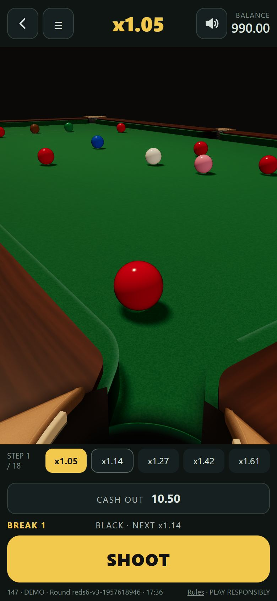
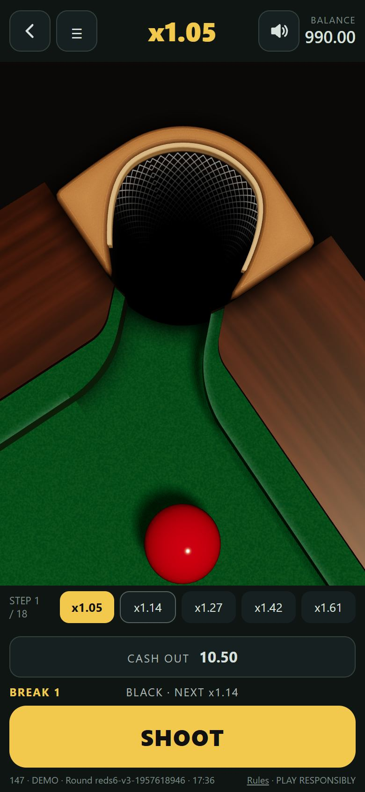
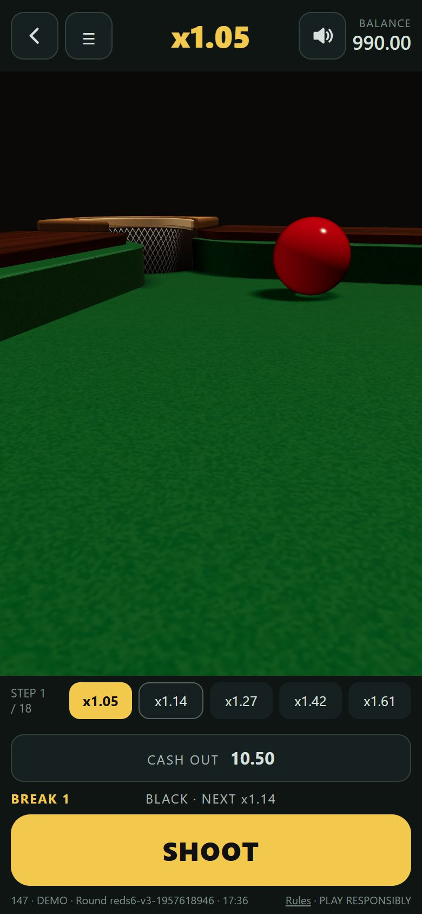
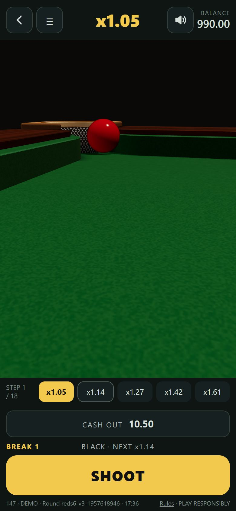

Pocket camera: 3 options
Pictures only, the game is not changed. Real game look (look A, T1 pockets, markings) on a
full screen 390×844, mid-round (step 1 played). The pocket is the black-end corner on the right.
The same red is potted in every picture: it comes from the middle of the black end at an angle; the cue ball
has stopped behind it (near the pink). Left: the red 20 cm before the pocket. Right: the red in the
jaws. The cue C1 is not in these pictures: in the game it has already faded out when the ball reaches the
pocket.
The pocket camera only changes what is drawn inside the table area; the top bar, the ladder strip and the
CASH OUT / SHOOT buttons stay where they are (checked in every picture: all inside the 390×844 screen).
P1 · low, behind the pocket
The camera is 30 cm behind the pocket, 30 cm above the cloth, looking back along the red's path. It sees the open pocket mouth at the bottom, the red rolling straight at the viewer, and the cue ball and most of the table behind it. The top quarter of the table area is dark (the room above the table).
Whole UI on screen: yes (top bar, ladder, CASH OUT, SHOOT).


P2 · high above the pocket
The camera is 75 cm above the cloth, almost straight over the pocket, looking down. It sees both jaws, the leather and the net from above, and the last part of the red's path. Only the space behind the pocket is dark (the floor).
Whole UI on screen: yes (top bar, ladder, CASH OUT, SHOOT).


P3 · from the side, at cloth height
The camera is 9 cm above the cloth, to the side of the path. In a corner a camera square to the path would stand behind the rail, so it stands inside the cushions, about 45° off square. It sees the pocket and net from the side and the red rolling across the last 30 cm. The pocket is small on screen: the top third is dark (the room) and the bottom third is empty cloth.
Whole UI on screen: yes (top bar, ladder, CASH OUT, SHOOT).

